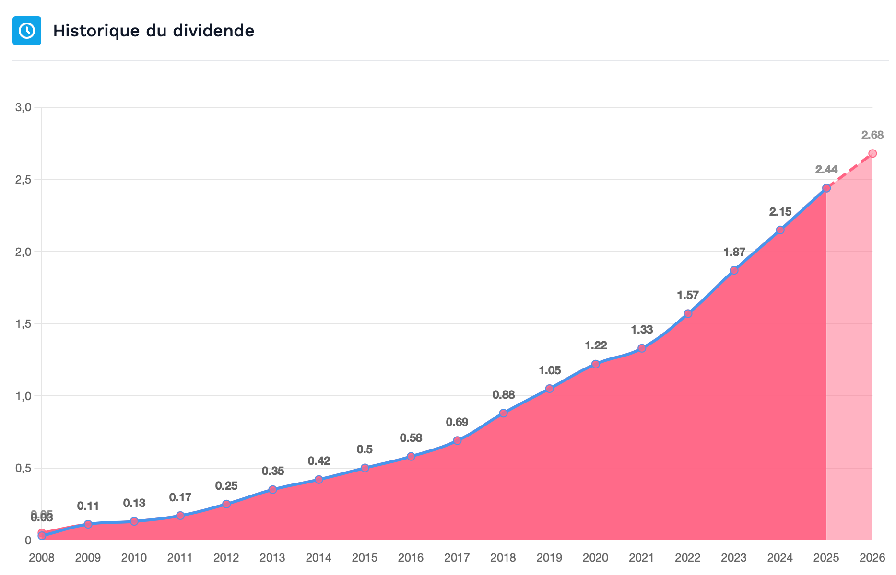
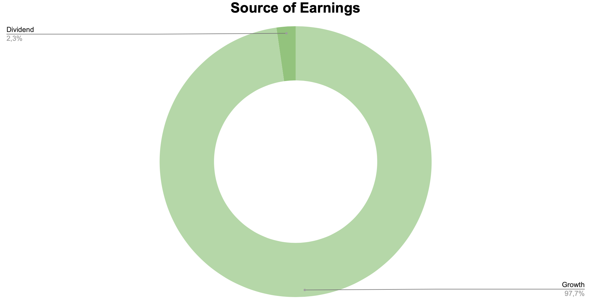

S'il y a bien un sujet qui fascine, attire et parfois aveugle totalement les investisseurs débutants, c'est celui des dividendes. L'idée de recevoir une "rente" régulière, un revenu passif et tangible qui tombe sur son compte en banque sans avoir à lever le petit doigt, est extrêmement séduisante. C'est le rêve de la liberté financière qui se matérialise par de simples lignes de cash. Mais en Quality Investing, notre approche du dividende est très spécifique, mathématique et rationnelle. Nous refusons de nous laisser berner par des chiffres de rendement tape-à-l'œil qui cachent souvent des risques mortels pour le capital.
Dans ce chapitre, nous allons déconstruire les mythes autour du "haut rendement" (High Yield), comprendre pourquoi le dividende n'est jamais une fin en soi, et surtout, découvrir comment l'utiliser comme une arme de capitalisation massive grâce à l'effet boule de neige inarrêtable des intérêts composés.
1. La Cerise sur le Gâteau (et non le gâteau lui-même)
Commençons par une vérité fondamentale que Wall Street oublie souvent d'expliquer aux débutants : un dividende n'est pas de l'argent magique créé de toutes pièces par le marché. Lorsqu'une entreprise décide de vous verser 1€ de dividende, c'est exactement 1€ de valeur qui est retiré de sa trésorerie interne et amputé de son bilan comptable. La conséquence mathématique immédiate de cette opération est que le prix de l'action baisse d'exactement 1€ le jour du détachement du dividende. Vous n'êtes pas plus riche le lendemain qu'à la veille : votre capital a simplement changé de forme, passant de la valeur de l'action à du cash sur votre compte (et au passage, l'État a pris sa part en impôts).
La plus grande erreur stratégique est donc de sélectionner une entreprise uniquement pour son dividende. Si une entreprise vous verse la quasi-totalité de ses bénéfices (un Payout Ratio de 80% ou 90%), cela signifie en langage financier qu'elle n'a plus aucune idée, plus aucune innovation, et plus aucune opportunité de croissance en interne pour réinvestir intelligemment cet argent.

En investissement de Qualité, nous cherchons avant tout des Compounders. Ce sont des entreprises capables de conserver leurs bénéfices pour les réinvestir dans leur propre croissance à des taux de rentabilité (ROIC) exceptionnels de 20%, 30% ou 40%. Nous préférons mille fois une entreprise qui garde son cash pour doubler de taille, multiplier ses bénéfices et anéantir la concurrence, plutôt qu'une entreprise qui nous le reverse parce qu'elle stagne. Le dividende doit être vu comme une simple validation de la santé financière insolente de l'entreprise, et non comme la raison première de l'achat.
2. Le Piège du "High Yield" vs La Puissance du "High Growth"
C'est précisément ici que les investisseurs naïfs tombent dans ce qu'on appelle le "Dividend Trap" (le piège à dividendes). Ils voient une action offrant un rendement affiché de 8%, 10% ou 12% et se précipitent pour l'acheter, pensant s'être assuré une rente confortable pour la retraite. C'est un mirage redoutable.
Comment le rendement (Yield) est-il calculé ? Il s'agit simplement de la formule suivante : Dividende Annuel / Prix de l'action. Si une entreprise affiche soudainement un rendement colossal de 10%, ce n'est presque jamais parce qu'elle a généreusement augmenté son dividende, mais parce que le prix de son action s'est effondré en bourse ! Un "High Yield" est souvent le signal d'alarme retentissant d'une entreprise surendettée, d'un business model en déclin structurel, ou d'une direction qui s'apprête à couper violemment son dividende pour sauver l'entreprise de la faillite.
En Quality Investing, nous fuyons les hauts rendements immédiats. Nous cherchons le Saint Graal absolu : la croissance ininterrompue du dividende (High Dividend Growth).

Étudions ce graphique magistral en détail. Il compare Verizon (un acteur des télécoms mature, lourdement endetté) et Visa (le leader mondial des paiements, en croissance continue). Au départ, Verizon offre un rendement très séduisant de près de 6%, tandis que Visa offre un rendement initial minuscule, souvent inférieur à 1%. Les chasseurs de dividendes classiques ignorent Visa avec dédain. Pourtant, grâce à son monopole et sa rentabilité extrême, Visa augmente son dividende de 15% à 20% chaque année !
C'est ici qu'intervient le concept mathématique magique de Yield on Cost (Rendement sur Coût d'acquisition). Si vous achetez une action 100€ qui verse 1€ de dividende (rendement de 1%), mais que ce dividende double tous les 5 ans, au bout de 15 ans, l'entreprise vous versera 8€ par action. Votre "Yield on Cost" est désormais de 8% par an sur votre investissement initial net, sans oublier que le cours de l'action Visa a probablement été multiplié par 5 ou 10 entre-temps ! Sur le graphique ci-dessus, on voit clairement que le rendement réel de l'investisseur Visa monte en flèche pour atteindre 12%, pulvérisant littéralement le rendement stagnant de Verizon. C'est la victoire absolue de la croissance sur le rendement brut.
La citation à retenir 💬
"Plus le rendement d'un dividende est élevé, plus le risque est grand. Un rendement exceptionnellement élevé est généralement la façon dont le marché vous avertit que le dividende est sur le point d'être coupé."
— Geraldine Weiss
3. Une Tendance Mondiale Haussière et Sécurisante
Malgré notre préférence assumée pour la plus-value du capital (qui est par ailleurs beaucoup plus efficiente fiscalement dans la majorité des pays francophones comme la France ou la Belgique), il ne faut pas nier la dimension psychologique et stabilisatrice du dividende.
Le grand avantage du dividende, c'est qu'il est tangible. Contrairement à la valorisation d'un portefeuille qui dépend de l'humeur bipolaire de Mr. Market, un dividende versé est du flux de trésorerie (Cash-Flow) concret qui atterrit définitivement dans votre poche. C'est un retour sur investissement que le marché ne peut plus jamais vous reprendre.

Comme le montre ce graphique macroéconomique, la masse totale des dividendes versés par les entreprises mondiales est en croissance structurelle continue. On observe que même lors de corrections boursières sévères, le flux de trésorerie reste d'une incroyable résilience. Posséder des entreprises Wide Moat qui augmentent leurs dividendes annuellement vous offre une protection naturelle contre l'inflation. Votre "rente" grandit mécaniquement sans que vous n'ayez besoin d'injecter de nouveau capital ou de travailler une heure de plus.
4. La Magie Absolue : Le Réinvestissement Automatique (DRIP)
Si vous êtes encore dans la phase de construction et de croissance de votre patrimoine (vous n'êtes pas encore à la retraite en train de consommer vos rentes), il existe une règle non négociable : vous devez réinvestir 100% des dividendes perçus. Ce mécanisme porte un nom institutionnel : le DRIP (Dividend Reinvestment Plan).
C'est par ce biais précis que la huitième merveille du monde, l'intérêt composé, déploie sa véritable puissance. En utilisant le cash de vos dividendes pour racheter de nouvelles parts de cette même entreprise, ces nouvelles parts vont générer leurs propres dividendes l'année suivante. Ces nouveaux dividendes, plus gros, achèteront encore plus de parts, et le cycle s'accélère à l'infini.

Étudions cet impressionnant graphique historique du S&P 500. Si vous aviez investi 1$ en 1950 et que vous aviez retiré vos dividendes pour les consommer (la courbe grise), votre capital vaudrait aujourd'hui environ 200$. Mais si vous aviez réinvesti rigoureusement chaque centime perçu en dividendes pour racheter des parts de l'indice (la courbe bleue foncé), votre 1$ initial se serait transformé en plus de 1600$ ! C'est une différence de performance d'un facteur 8, uniquement due au réinvestissement.
La mathématique est claire et intraitable : ne retirez jamais vos dividendes de votre compte de courtage. Utilisez-les comme de la "Poudre Sèche" (Dry Powder) gratuite et renouvelable pour renforcer vos positions, particulièrement lors des baisses de marché où chaque euro réinvesti permet d'acheter plus de parts à des prix bradés.
5. Le Vrai Chiffre à Surveiller : La Croissance Annuelle du Dividende Par Action
Voici le concept qui sépare véritablement l'amateur de l'investisseur professionnel. Pour un investisseur de Qualité, le rendement initial à l'instant T n'est qu'une donnée superficielle. L'objectif ultime, le chiffre que vous devez traquer avec la plus grande attention dans vos rapports financiers, c'est la croissance annuelle du dividende par action (DPS - Dividend Per Share).
Une entreprise d'exception est capable de faire grossir le montant qu'elle vous verse chaque année de manière agressive. C'est la preuve irréfutable que ses bénéfices explosent et que son modèle économique est invincible.

Regardez cette courbe parfaite : le dividende versé par action passe de 0.05$ en 2008 à plus de 2.68$ estimés pour 2026. C'est une multiplication du versement par 50 en moins de vingt ans ! C'est exactement ce type de trajectoire parabolique que nous cherchons à intégrer dans nos portefeuilles. (Indice : il s'agit du géant mondial du paiement par carte bancaire que nous avons évoqué plus haut dans ce chapitre).
Au niveau de la gestion de votre propre portefeuille, cela se traduit par une règle simple : le but est que le montant total en dividendes nets que vous encaissez à la fin de chaque année grandisse d'au moins 10% à 15% par rapport à l'année précédente, sans même que vous n'ayez eu à injecter massivement du nouveau capital. C'est la validation mathématique absolue que votre stratégie fonctionne.
6. Application Pratique : La réalité de mon Portefeuille
Pour vous prouver que la théorie académique du Quality Investing se traduit fidèlement dans la réalité et n'est pas qu'un simple concept théorique, analysons ensemble la véritable source de performance de mon propre portefeuille d'investissement, construit strictement sur les principes de cette formation.

Ce ratio exceptionnel (97.7% de la performance totale provenant de la croissance du capital, contre seulement 2.3% provenant des dividendes bruts) est l'illustration parfaite de l'empreinte d'un portefeuille concentré sur des Compounders purs et durs. En détenant des leaders technologiques et financiers de très haute qualité, l'écrasante majorité de l'enrichissement se matérialise par l'explosion du prix de l'action. Ces entreprises ne sont pas là pour distribuer leur cash timidement, elles sont là pour conquérir le monde.
Ne vous méprenez pas : ces 2.3% représentent tout de même des centaines d'euros de liquidités qui s'ajoutent à mon capital chaque année. Mais ils ne sont qu'un agréable effet secondaire de mon choix de m'associer aux meilleures entreprises de la planète, et non le moteur central de ma stratégie d'enrichissement.
🔑 Ce qu'il faut retenir
Le dividende n'est jamais une création de richesse spontanée, c'est une distribution directe de la valeur de l'entreprise. Fuyez systématiquement les pièges à "High Yield" qui cachent des entreprises moribondes ou surendettées.
Le Quality Investing privilégie le "High Dividend Growth" : des entreprises exceptionnelles avec un rendement initial faible mais une capacité avérée à augmenter leur versement par action (DPS) de manière agressive année après année.
Le dividende n'est que la cerise sur le gâteau de la plus-value, qui reste le principal moteur de performance. Pendant toute votre phase d'accumulation, engagez-vous à réinvestir pieusement et systématiquement chaque euro perçu pour libérer la puissance exponentielle des intérêts composés et maximiser votre rendement à long terme.